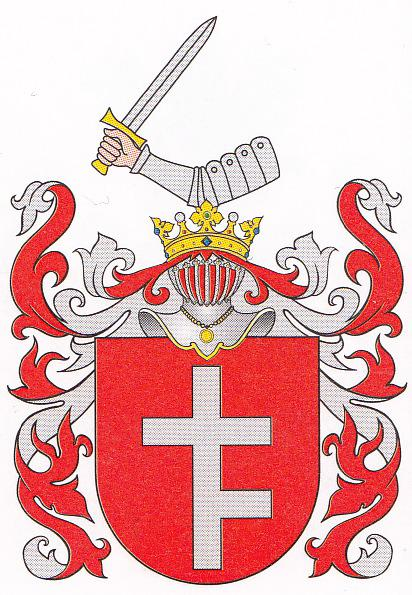
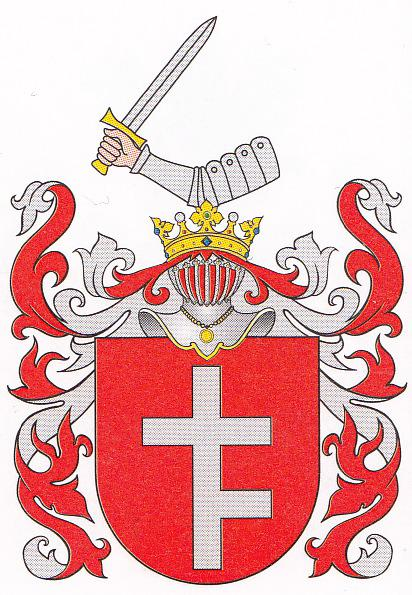

Rodzina strona rodu Klementowskich
Strona Rodu Klementowskich jest poświęcona zgłębianiu historii, genealogii i więzi rodzinnych Klementowskich oraz pokrewnych. Znajdziesz tutaj bogate informacje na temat historii rodu, opowieści o naszych przodkach i genealogiczne drzewo rodowe. Nasze stowarzyszenie jest zaangażowane w wspieranie rodzinnych biznesów, odnawianie rodzinnych kontaktów oraz pomoc w odnajdywaniu korzeni. Zapraszamy Cię do odkrywania naszej historii i dołączania do nas w poszukiwaniu wspólnych więzi rodzinnych.